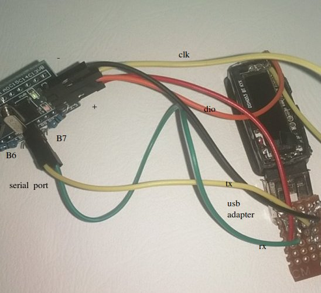

The black magic probe¶
probes in zephyr¶
You can program the nrf52832 with a debuggerprobe. The standard-setup is jlink (segger).
/root/zephyrproject/zephyr/boards/arm/id107plus/board.cmake (adapt the runner here)
in our case : instead of jlink specify : blackmagicprobe
The cool thing about this probe that it has a serial port (3.3V) and a debug (upload) port on the same usb-port.
/dev/ttyACM1 is serial port (pb6 pb7)
minicom -b 115200 -D /dev/ttyACM1
/dev/ttyACM0 is used as debugger/uploading
west debug --runner blackmagicprobe west flash --runner blackmagicprobe
howto setup a blackmagicprobe¶
You can buy this probe and support the developers. (make this world a better place)
I bought a "cheapo" "blue pill" stm32 board for future projects ... soldered a 1.8K resistor between 3.3K and PA12
downloaded from https://jeelabs.org/docs/software/bmp/ - blackmagic.bin (79 ko) - blackmagic_dfu.bin (7 ko)
in jlink : loadbin blackmagic_dfu.bin 0x8000000 (specify jlink no options ...) switch boot0 or boot1 or whatever connect usb in linux dfu-util -v -R -d 0483:df11 -s 0x08002000 -D blackmagic.bin (uploading in jlink was a problem cause memory restrictions)
(removed boot0 and boot1 connectors on the stm afterwards)
plugged it in the USB port and it pops up (had to enable it first in virtual box usb : black sphere technologies .....)